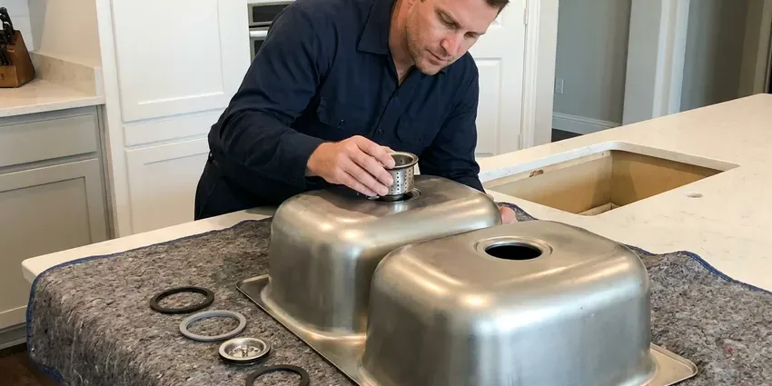
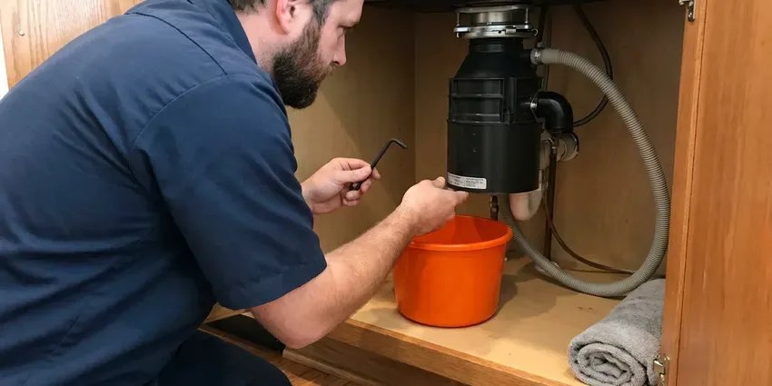
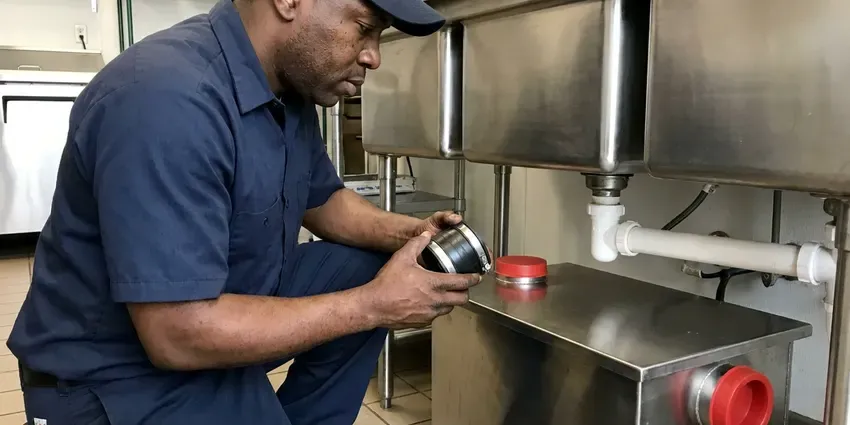

Kitchen Plumbing in Rutland, VT
Slow drain, humming disposal or a faucet that drips all night. Our Rutland, VT plumbers handle all of it with parts from the truck.
- No Surprise Charges
- Insured, Licensed Crews
- Labor Guaranteed
- Same-Day Visits Most Weekdays
Book a Kitchen Plumber in Rutland, VT
Turn the shutoff valves under the sink clockwise if it is leaking, then give us a call.
Kitchen Plumbing Across Rutland, VT
CKV Plumbing sends plumbers who start with the symptom you describe and work backward to the cause. A disposal that hums is usually jammed, not dead. Freeing it with a hex key takes about ten minutes when the motor is still good, and we will tell you plainly if it is not.
Our expertise includes:
- InSinkErator, Waste King and Moen disposals
- Grease trap repair and code upkeep
- Drain cleaning and grease trap service

Additional Kitchen Plumbing Services in Rutland, VT
Our kitchen plumbing services in Rutland, VT cover sinks, disposals, dishwashers, and grease traps so your kitchen keeps running without backups or leaks.


Kitchen Sink Installation near Rutland

Rutland garbage disposal repair specialists

Professional grease trap installation, Rutland

Customers
Why Choose CKV Plumbing for Kitchen Plumbing in Rutland, VT?
We test under real use. That means both bowls filled, the disposal run, the dishwasher sent through a drain cycle and a dry paper towel held to each joint before we pack up.
- Kitchen Experience, Sinks, faucets and disposals make up a big share of what we do every week.
- Commercial Kitchens, We work in restaurants and cafeterias before or after your rush.
- One Crew for the Whole Kitchen, Sink, disposal, dishwasher and grease trap handled by one plumber.
Citywide Coverage
Every neighborhood in Rutland and the towns around it is covered by CKV Plumbing. Close in or out on the edges, a stocked truck can usually reach you the same day, and nearly every kitchen call wraps up on the first trip. Leaks get weekend service.
Experienced Team
Technicians at CKV Plumbing spend a large part of every week on sinks, faucets and disposals. They get fast at it. Knowing common Moen and Delta cartridge numbers and which disposal mounts interchange cuts the time you pay for.
Safety-First Approach
Your kitchen gets treated with care. That means drop cloths on the floor, a towel in the cabinet, and every joint checked with a dry paper towel before we leave. A slow drip found on the day of the install costs nothing to fix, while one found a month later can rot the cabinet floor.
Trusted Certified Rutland Plumbing Services Professionals
At CKV Plumbing, we take pride in licensed, certified plumbing services throughout Rutland, VT. Those papers on the wall mean something. Our plumbers hold recognized industry credentials, and they follow strict safety and quality rules on every repair, installation and maintenance call we run.
Call Us Now PHCC Plumbing Contractor Recognition
PHCC Plumbing Contractor Recognition Better Business Bureau (BBB) Accreditation
Better Business Bureau (BBB) Accreditation Angi Certified Pro
Angi Certified Pro ISO 9001 Quality Management Certification
ISO 9001 Quality Management CertificationWhat Our Kitchen Plumbers Fix and Install in Rutland, VT
InSinkErator Models We Service in Rutland
Badger units are the basic line, with a single grind stage and a 1/3 to 3/4 horsepower motor. Evolution models add grind stages and sound insulation, which matters in an open kitchen, and some carry longer in-home warranties than the basic line does. Common models are on the truck. Older InSinkErator units with a good motor can usually be repaired.

Grease Trap Installation in Rutland, VT
Under-sink grease traps work for small kitchens, while full restaurants often need an in-ground interceptor sized to the local sewer authority's rules. The local rule gets checked before we price it. Trap size comes from fixture flow rates, and a trap that is too small fills quickly and lets grease slip into the sewer.
Grease Interceptors in Rutland
In-ground interceptors are much bigger than under-sink traps and are sized by the sewer authority's formula for your fixtures, not by guesswork. We coordinate with your general contractor and the inspector on location, venting and the sample port. The pump truck needs access. Lids the truck cannot reach make every pump-out more expensive.
Grease Trap Repair in Rutland, VT
Cracked lids, missing baffles and rusted inlet tees all let grease pass straight through a trap. We inspect each part during cleaning and replace what has failed, usually on the same visit. A trap missing its baffle is just a pipe. On big interceptors we schedule the pump-out first and then check the walls, outlet and sampling port.
Kitchen Drain Clog Removal in Rutland, VT
Water rising in the second bowl when the first drains tells us the clog is past the trap, in the branch line behind the cabinet. We run a 1/4 or 3/8 inch cable from the cleanout or the trap arm, then jet the line if the cable comes back coated in grease. Drain chemicals do little to grease. What they do is sit in the trap and weaken the glue joints.
Recurring Kitchen Clogs in Rutland, VT
Grease, rice, pasta and coffee grounds build up in the trap and branch line over months, not days. We clear the line with a cable sized for kitchen pipe and can camera it if the clog keeps coming back. The pipe is sometimes the cause. A low spot in the line or a drain arm without enough fall will collect grease however often it is cleared.
Grease Trap Installation and Cleaning in Rutland
Grease traps are sized by flow, and a three-compartment sink typically calls for a trap rated at 20 gallons per minute or more. We set the trap level, install the flow control fitting and vent it so it does not siphon. Cleaning schedules depend on volume. Busy fryer kitchens may need it every few weeks.

Disposal Repairs That Make Sense in Rutland, VT
Jams, tripped resets, loose mounts and leaking sink flanges are all fixable in less than an hour. Motor and seal failures are not. When the repair would cost more than half of a new unit, we tell you so and give you a replacement price on the spot instead of selling a part that will not last.
Kitchen Plumbing Near Me in Rutland, VT
Restaurants and food service kitchens in Rutland call us for grease traps, floor sinks and three-compartment sinks. We schedule around your rush. Pretreatment rules depend on the local sewer district, and we confirm them before any install or cleaning.
Searching for a kitchen plumber near you in Rutland usually means water is already on the cabinet floor. Our plumbers work Rutland daily and can usually reach you within a few hours. Shut the valves under the sink first. When you call, say whether it is the supply line, the trap or the disposal leaking so we bring the right parts.
CKV Plumbing at a Glance
- Fully licensed plumbing team covering Rutland, VT
- 24/7 emergency service with same-day scheduling
- Clear written estimates, no hidden fees
- 4.8-star rated by 553+ Vermont customers
Rutland Map
Rutland Information
- Population
- 15,630
- Area codes
- Local
- Service area
- Rutland and towns within a 40 mile drive
- Nearby
- Middlebury, Barre, Montpelier, Bennington
A large share of Vermont homes rely on private wells, and well water here can range from soft to moderately hard depending on the bedrock. Under a Rutland, VT kitchen sink, you see it as scale on the aerator and buildup in the trap long before the drain quits.
Expert Services
Reach out to CKV Plumbing for honest, reliable plumbing from people who know the trade in Rutland, VT.
Our Specialized Plumbing Services in Rutland, VT
At CKV Plumbing, you get every kind of plumbing service from one company across Rutland, VT. We go from leak detection all the way to full system installations, for homes and commercial buildings, and we do it quickly at a fair price. Here are the core services we offer:


What Happens After You Call About Kitchen Plumbing in Rutland, VT
From the first call to the last leak check, this is how we handle kitchen plumbing in Rutland.
Tell Us the Problem
Call (802) 209-5139 and describe what you see under the sink. We ask a few questions so the right parts come on the truck.
On-Site Look
Your plumber tests the disposal or opens the trap at your Rutland home, explains what failed, and gives a written price.
Fix It Right
After your approval, the plumber makes the repair and tests it under real use, then cleans up the cabinet.
Frequently Asked Questions About Kitchen Plumbing in Rutland
Clog removal is usually $150 to $300. A garbage disposal replacement including the unit typically runs $350 to $600, depending on horsepower and whether the mount can be reused. Repiping a branch line can go past $800, and that price comes after we look at the pipe.
Some handy homeowners do. The plumbing is the easy half. Most DIY problems come from the wiring, the trap height or a sink flange that drips slowly into the cabinet for weeks. Disposal installs are routine for us.
Swapping a faucet or clearing a clog usually does not need one. Relocating a sink, adding a drain or altering the waste and vent lines usually requires one, though each jurisdiction sets its own rules. We check Rutland rules ahead of the job.
Past eight to ten years, replacement usually wins. Aging units jam more and lose their seals, and paying half the cost of a new one for a repair seldom pays off. Newer models also run quieter.
For faucet or disposal swaps, normally no. Moving a sink, adding a drain line or major repiping usually requires a permit and an inspection through the Rutland building department. We handle the paperwork when it is needed.
Plan on two to four hours for a standard sink swap when the counter opening fits and the drain lines are in good shape. Undermounts take longer. If the countertop has to be cut, the cabinet modified or the drain arm moved, the job can run most of a day.
Most restaurants need it every one to three months, depending on menu, volume and local rules. Heavy frying means more frequent service. Homes with a residential grease trap can usually get by with a yearly inspection and cleaning, unless the household cooks with a lot of oil.
Repair covers jams, tripped resets, loose mounts and leaking sink flanges. You need a new unit when the motor dies, the chamber cracks or the bottom of the housing leaks, since those internal parts are not replaceable. We tell you which one it is.
What People Are Saying About Our Plumbing Experts?

Laura S.
Our 40 gallon tank started leaking from the bottom after thirteen years. The tech hauled the old one out, set a new unit with a fresh expansion tank, and had hot water running in about four hours. He took the old tank with him too.
Water Heater Replacement · Middlebury, VT
Lisa C.
Water was pouring out from under the washing machine on a holiday weekend. CKV Plumbing talked me through closing the valves over the phone and had a plumber at the house within ninety minutes. It was a burst fill hose.
Emergency Plumbing · Shelburne, VT
Robert G.
The camera showed a full break in our clay sewer line near the street. CKV Plumbing replaced it with a trenchless pipe burst, so the only digging was two small pits in the yard. They let us watch the footage before and after.
Sewer Line Replacement · Montpelier, VT
Angela D.
Our sump pump quit during a storm and the water was an inch from the basement carpet. CKV Plumbing put in a new pump with a battery backup that same evening. We have had two heavy rains since. It kicked on both times.
Sump Pump · Rutland, VTJames P.
Our restaurant had a slow leak at the hand sink that was rotting the cabinet base. CKV Plumbing came in at six in the morning before prep, replaced the trap and both supply lines, and was packed up before my first cook clocked in.
Commercial Plumbing · Brattleboro, VTRachel N.
Hard water was leaving white crust on every faucet and our dishwasher was struggling. The tech tested the water, recommended a softener sized for a family of five, and installed it with a bypass valve in one afternoon. The spots on our glasses are gone.
Water Softener · Bennington, VT